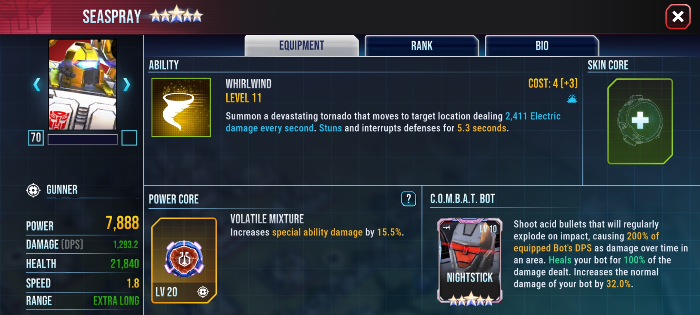
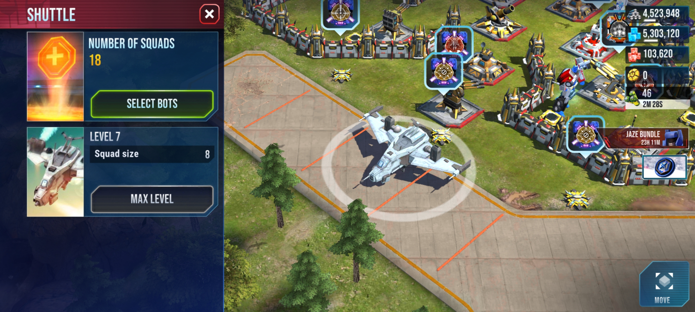

Боты и составление отрядов
Бот - это боевая единица твоего отряда
Есть у ботов звездный рейтинг:
- 1 Звезда
- 2 Звезды
- 3 Звезды
- 4 Звезды
- 5 Звезд
То есть один бот может существовать сразу в 5 версиях.
У ботов есть такие характеристики как:
- Уровень
- Мощь
- УВС - урон в секунду
- ХП - здоровье
Так же у ботов есть классы:
- Артелерист
- Танк
- Особый
- Медик
- Аэробот
- Трехрежимник
Как выглядят характеристики бота:

Эти боты вместе образуют отряд для нападений.

Как правило отряд состоит из:
- Бот котрый будет хорошо бить по области (Сиспрей, Ворпас, Оптимус Оптимал, Лео Прайм и т.д.)
- Бот-жир (Танк с щитом на 80%)
- Летун-шотер (Летун который будет бить здание за одно использование способности)
- Бот класса особый
- Смоукскрин - шотер для аванпостов
- Рук - своей способностью он может вскрывать аванпосты и обмануть Компьютрона
- Медик (Минерва, Ретчет, Уилджек)
- Второй медик (Минерва, Ретчет, Уилджек)
Вот мой отряд:

Ну, а вот какие боты существуют в игре:


Всего ботов существует около 800 штук(Автоботов и Десептиконов).
Курс пройден на 10%